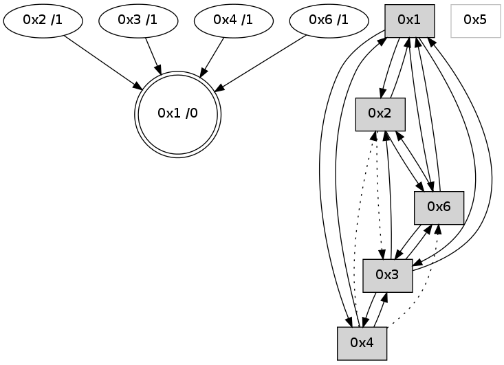

>> << IDX [start] -100 -25 -5 +0 +5 +25 +100 [665.017724037]
 Previous packets
----------------------------------------------------------------------
660.066678 beacon01(adaf) #0 coord=01,02,05,03,04,06 cycle=432.0ms assoc
-- color-indic=0 64 39 d5
660.076639 beacon02(adaf) #0 coord=01,02,05,03,04,06 cycle=432.0ms assoc 64 68 2a
660.086639 beacon05(adaf) #0 coord=01,02,05,03,04,06 cycle=432.0ms assoc 64 ce 00
660.096639 beacon03(adaf) #0 coord=01,02,05,03,04,06 cycle=432.0ms assoc 64 52 24
660.106639 beacon04(adaf) #0 coord=01,02,05,03,04,06 cycle=432.0ms assoc 64 f4 0e
660.116640 beacon06(adaf) #0 coord=01,02,05,03,04,06 cycle=432.0ms assoc 64 80 12
----------------------------------------------------------------------
660.558785 beacon01(adaf) #0 coord=01,02,05,03,04,06 cycle=432.0ms assoc
-- color-indic=0 64 75 65
660.568746 beacon02(adaf) #0 coord=01,02,05,03,04,06 cycle=432.0ms assoc 64 24 9a
660.588749 beacon03(adaf) #0 coord=01,02,05,03,04,06 cycle=432.0ms assoc 64 1e 94
660.598746 beacon04(adaf) #0 coord=01,02,05,03,04,06 cycle=432.0ms assoc 64 b8 be
660.620423 [Hello(4): seq=462 sym=6,3,1 sysInfo= stat=6:10,0,3,0/3:6,0,2,0/1:9,0,7,0]
660.625478 [Hello(1): seq=361 sym=3,6 mpr= sysInfo= stat=3:3,0,2,0/6:6,0,4,0]
----------------------------------------------------------------------
661.050894 beacon01(adaf) #0 coord=01,02,05,03,04,06 cycle=432.0ms assoc
-- color-indic=0 64 b1 0a
661.060855 beacon02(adaf) #0 coord=01,02,05,03,04,06 cycle=432.0ms assoc 64 e0 f5
661.070854 beacon05(adaf) #0 coord=01,02,05,03,04,06 cycle=432.0ms assoc 64 46 df
661.080855 beacon03(adaf) #0 coord=01,02,05,03,04,06 cycle=432.0ms assoc 64 da fb
661.090855 beacon04(adaf) #0 coord=01,02,05,03,04,06 cycle=432.0ms assoc 64 7c d1
661.100856 beacon06(adaf) #0 coord=01,02,05,03,04,06 cycle=432.0ms assoc 64 08 cd
661.111864 [STC(1) #0.9 to-color d=0]
661.116184 PARSE ERROR************************
Traceback (most recent call last):
File "PacketAnalysis.py", line 167, in showOperaPacket
structPacket = OperaPacketParse.parsePacket(rawPacket)
File "../../pkg-python/HipSens/Core/OperaPacketParse.py", line 461, in parsePacket
return parseHelloMessage(data)
File "../../pkg-python/HipSens/Core/OperaPacketParse.py", line 127, in parseHelloMessage
assert struct.calcsize("H")*len(neighAddrList) == len(linkList)
AssertionError
48 1c 03 00 01 cd 00 02 02 06 04 00 01 00 06 00 53 04 00 00 00 00 4c 06 03 07 06 0d 03 0d 4c bb
----------------------------------------------------------------------
661.543001 beacon01(adaf) #0 coord=01,02,05,03,04,06 cycle=432.0ms assoc
-- color-indic=0 64 fc 0d
661.552962 beacon02(adaf) #0 coord=01,02,05,03,04,06 cycle=432.0ms assoc 64 ad f2
661.562962 beacon05(adaf) #0 coord=01,02,05,03,04,06 cycle=432.0ms assoc 64 0b d8
661.572964 beacon03(adaf) #0 coord=01,02,05,03,04,06 cycle=432.0ms assoc 64 97 fc
661.582963 beacon04(adaf) #0 coord=01,02,05,03,04,06 cycle=432.0ms assoc 64 31 d6
661.592963 beacon06(adaf) #0 coord=01,02,05,03,04,06 cycle=432.0ms assoc 64 45 ca
661.603722 [Hello(1): seq=362 sym=3,6 sysInfo= stat=3:3,0,2,0/6:7,0,4,0]
661.606111 [Hello(4): seq=463 sym=6,3,1 sysInfo= stat=6:10,0,3,0/3:7,0,2,0/1:10,0,8,0]
661.609111 [STC(4)->1 #0.9 to-color d=1]
661.610984 [STC(2)->1 #0.9 to-color d=1]
----------------------------------------------------------------------
662.035109 beacon01(adaf) #0 coord=01,02,05,03,04,06 cycle=432.0ms assoc
-- color-indic=0 64 38 62
662.045071 beacon02(adaf) #0 coord=01,02,05,03,04,06 cycle=432.0ms assoc 64 69 9d
662.055069 beacon05(adaf) #0 coord=01,02,05,03,04,06 cycle=432.0ms assoc 64 cf b7
662.065070 beacon03(adaf) #0 coord=01,02,05,03,04,06 cycle=432.0ms assoc 64 53 93
662.075070 beacon04(adaf) #0 coord=01,02,05,03,04,06 cycle=432.0ms assoc 64 f5 b9
662.085070 beacon06(adaf) #0 coord=01,02,05,03,04,06 cycle=432.0ms assoc 64 81 a5
662.096747 [Hello(3): seq=462 sym=4,1,6 sysInfo= stat=4:8,0,3,0/1:14,0,6,0/6:13,0,3,0]
----------------------------------------------------------------------
662.527219 beacon01(adaf) #0 coord=01,02,05,03,04,06 cycle=432.0ms assoc
-- color-indic=0 64 74 d2
662.537182 beacon02(adaf) #0 coord=01,02,05,03,04,06 cycle=432.0ms assoc 64 25 2d
662.547180 beacon05(adaf) #0 coord=01,02,05,03,04,06 cycle=432.0ms assoc 64 83 07
662.557180 beacon03(adaf) #0 coord=01,02,05,03,04,06 cycle=432.0ms assoc 64 1f 23
662.567180 beacon04(adaf) #0 coord=01,02,05,03,04,06 cycle=432.0ms assoc 64 b9 09
662.577181 beacon06(adaf) #0 coord=01,02,05,03,04,06 cycle=432.0ms assoc 64 cd 15
662.588860 [Hello(4): seq=464 sym=6,3,1 sysInfo= stat=6:10,0,3,0/3:8,0,2,0/1:11,0,8,0]
662.591644 [Hello(1): seq=363 sym=2,3,6 sysInfo= stat=2:0,0,1,0/3:3,0,2,0/6:8,0,4,0]
----------------------------------------------------------------------
663.019327 beacon01(adaf) #0 coord=01,02,05,03,04,06 cycle=432.0ms assoc
-- color-indic=0 64 b0 bd
663.029287 beacon02(adaf) #0 coord=01,02,05,03,04,06 cycle=432.0ms assoc 64 e1 42
663.039288 beacon05(adaf) #0 coord=01,02,05,03,04,06 cycle=432.0ms assoc 64 47 68
663.049288 beacon03(adaf) #0 coord=01,02,05,03,04,06 cycle=432.0ms assoc 64 db 4c
663.059290 beacon04(adaf) #0 coord=01,02,05,03,04,06 cycle=432.0ms assoc 64 7d 66
663.069289 beacon06(adaf) #0 coord=01,02,05,03,04,06 cycle=432.0ms assoc 64 09 7a
663.080960 [Hello(3): seq=463 sym=4,1,6 sysInfo= stat=4:9,0,3,0/1:15,0,6,0/6:13,0,3,0]
663.084671 [Hello(6): seq=379 sym=3,1,2 sysInfo=hasWarning stat=3:12,0,2,0/1:3,0,7,0/2:7,0,2,0]
----------------------------------------------------------------------
663.511436 beacon01(adaf) #0 coord=01,02,05,03,04,06 cycle=432.0ms assoc
-- color-indic=0 64 95 80
663.521397 beacon02(adaf) #0 coord=01,02,05,03,04,06 cycle=432.0ms assoc 64 c4 7f
663.531396 beacon05(adaf) #0 coord=01,02,05,03,04,06 cycle=432.0ms assoc 64 62 55
663.541397 beacon03(adaf) #0 coord=01,02,05,03,04,06 cycle=432.0ms assoc 64 fe 71
663.551398 beacon04(adaf) #0 coord=01,02,05,03,04,06 cycle=432.0ms assoc 64 58 5b
663.561398 beacon06(adaf) #0 coord=01,02,05,03,04,06 cycle=432.0ms assoc 64 2c 47
663.572472 [Hello(1): seq=364 sym=2,3,6 sysInfo= stat=2:0,0,1,0/3:4,0,2,0/6:9,0,4,0]
663.576132 [STC(1) #0.10 to-color d=0]
663.578468 [Hello(4): seq=465 sym=6,3,1 sysInfo= stat=6:11,0,3,0/3:9,0,2,0/1:12,0,8,0]
663.582235 [Hello(2): seq=958 sym=6,1 asym=3 sysInfo= stat=6:7,0,2,0/1:6,0,8,0/3:9,0,3,0]
----------------------------------------------------------------------
664.003544 beacon01(adaf) #0 coord=01,02,05,03,04,06 cycle=432.0ms assoc
-- color-indic=0 64 51 ef
664.013504 beacon02(adaf) #0 coord=01,02,05,03,04,06 cycle=432.0ms assoc 64 00 10
664.023505 beacon05(adaf) #0 coord=01,02,05,03,04,06 cycle=432.0ms assoc 64 a6 3a
664.033505 beacon03(adaf) #0 coord=01,02,05,03,04,06 cycle=432.0ms assoc 64 3a 1e
664.043506 beacon04(adaf) #0 coord=01,02,05,03,04,06 cycle=432.0ms assoc 64 9c 34
664.053506 beacon06(adaf) #0 coord=01,02,05,03,04,06 cycle=432.0ms assoc 64 e8 28
664.065429 [Hello(3): seq=464 sym=4,2,1,6 sysInfo= stat=4:10,0,3,0/2:0,0,0,0/1:0,0,7,0/6:14,0,3,0]
664.068562 [STC(3)->1 #0.10 to-color d=1]
----------------------------------------------------------------------
664.495651 beacon01(adaf) #0 coord=01,02,05,03,04,06 cycle=432.0ms assoc
-- color-indic=0 64 1d 5f
664.505611 beacon02(adaf) #0 coord=01,02,05,03,04,06 cycle=432.0ms assoc 64 4c a0
664.515613 beacon05(adaf) #0 coord=01,02,05,03,04,06 cycle=432.0ms assoc 64 ea 8a
664.525612 beacon03(adaf) #0 coord=01,02,05,03,04,06 cycle=432.0ms assoc 64 76 ae
664.535614 beacon04(adaf) #0 coord=01,02,05,03,04,06 cycle=432.0ms assoc 64 d0 84
664.557375 [Hello(4): seq=466 sym=3,1 asym=6,2 sysInfo= stat=3:10,0,3,0/1:12,0,8,0/6:11,0,3,0/2:0,0,0,0]
664.560398 [Hello(1): seq=365 sym=2,4,3,6 sysInfo= stat=2:1,0,1,0/4:0,0,0,0/3:4,0,2,0/6:10,0,5,0]
----------------------------------------------------------------------
664.987762 beacon01(adaf) #0 coord=01,02,05,03,04,06 cycle=432.0ms assoc
-- color-indic=0 64 d9 30
664.997726 beacon02(adaf) #0 coord=01,02,05,03,04,06 cycle=432.0ms assoc 64 88 cf